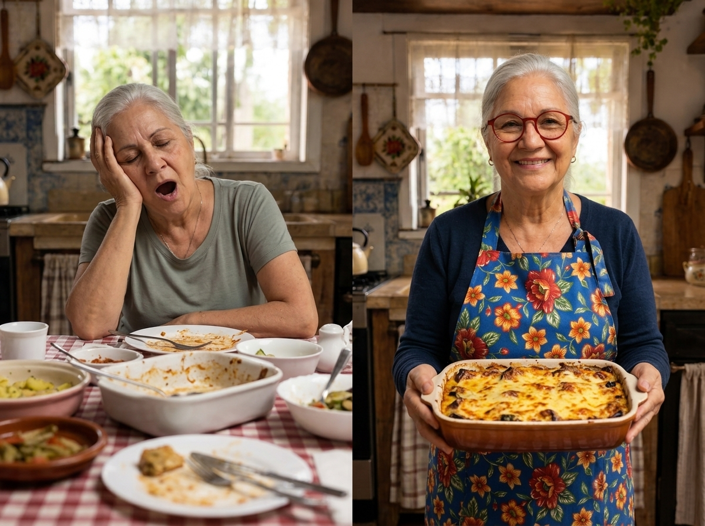
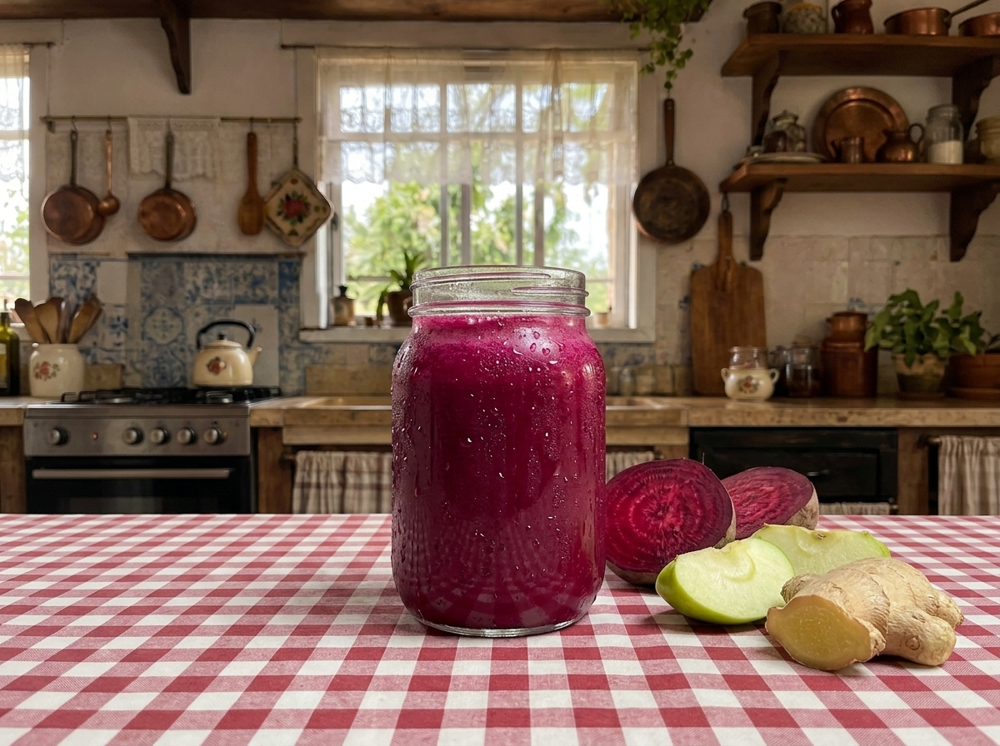
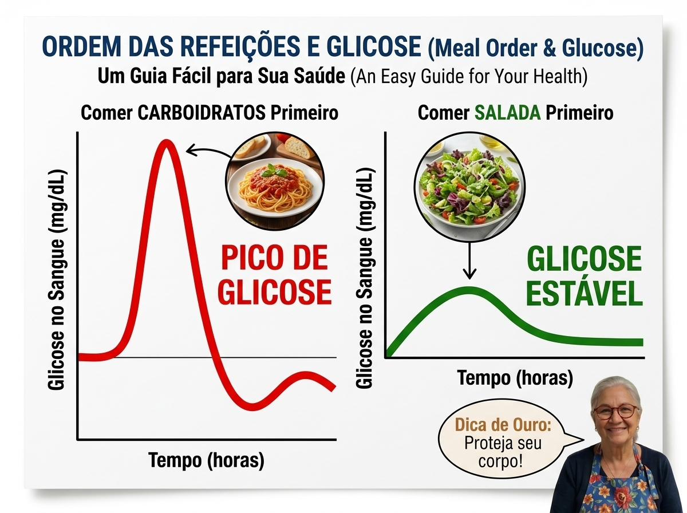
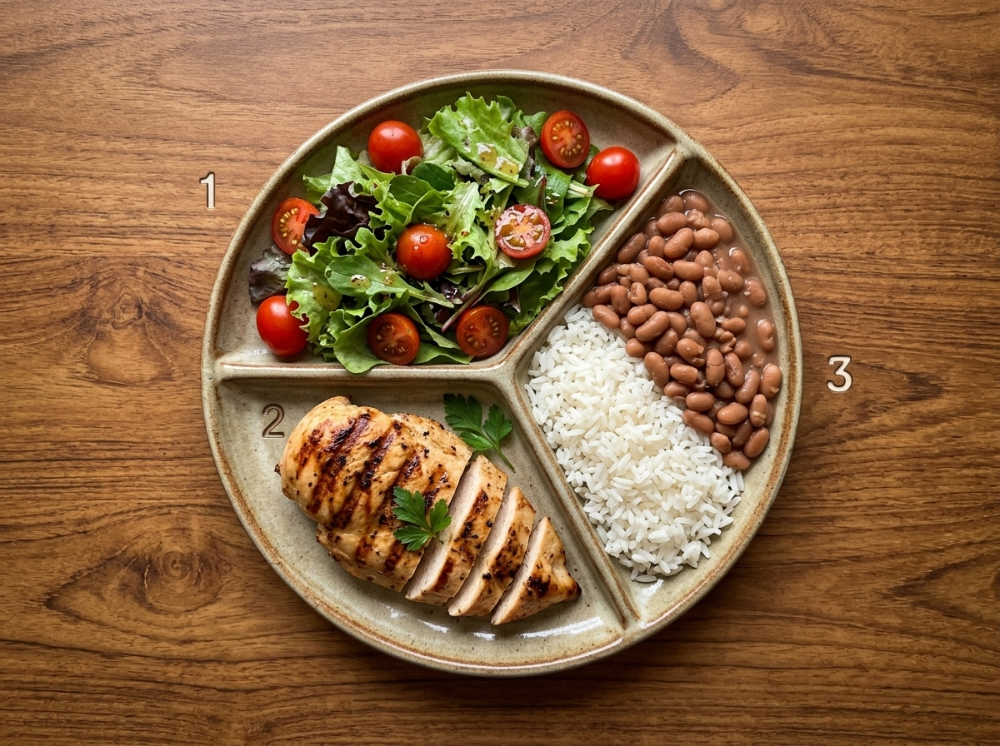
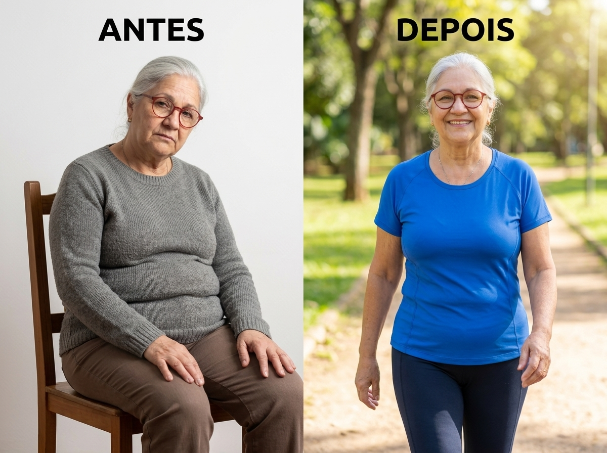
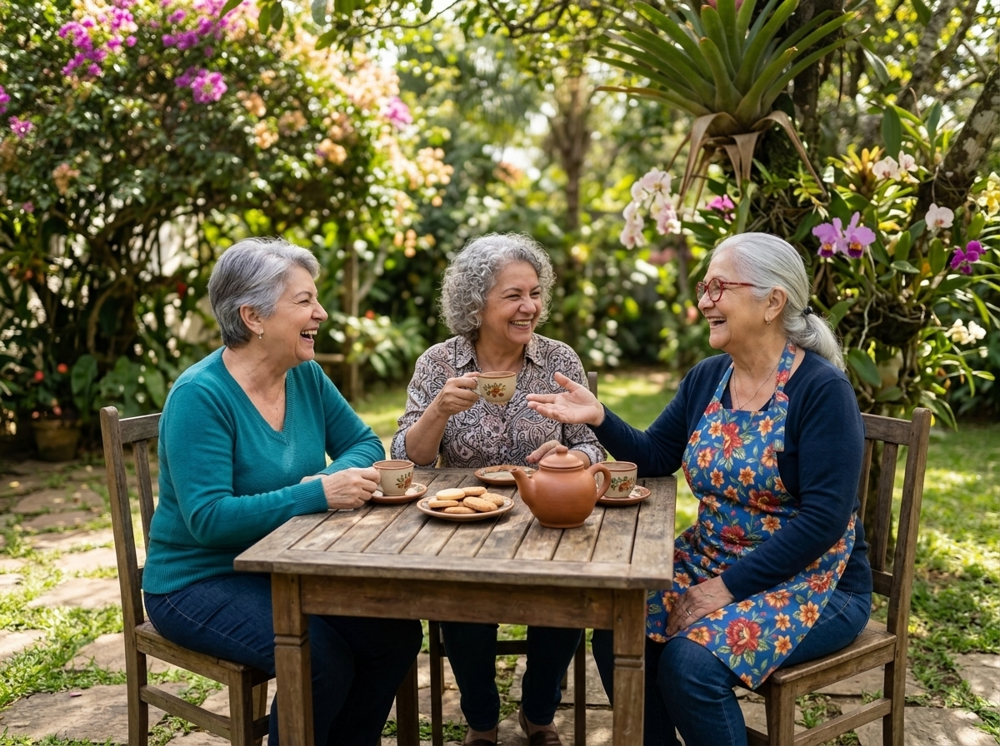
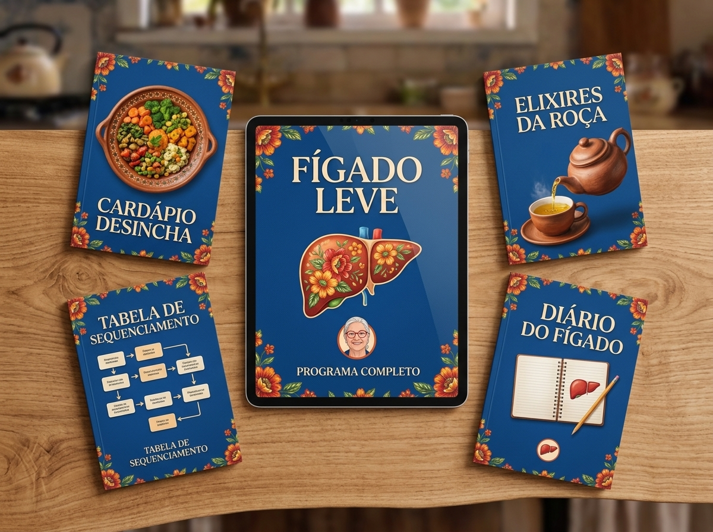
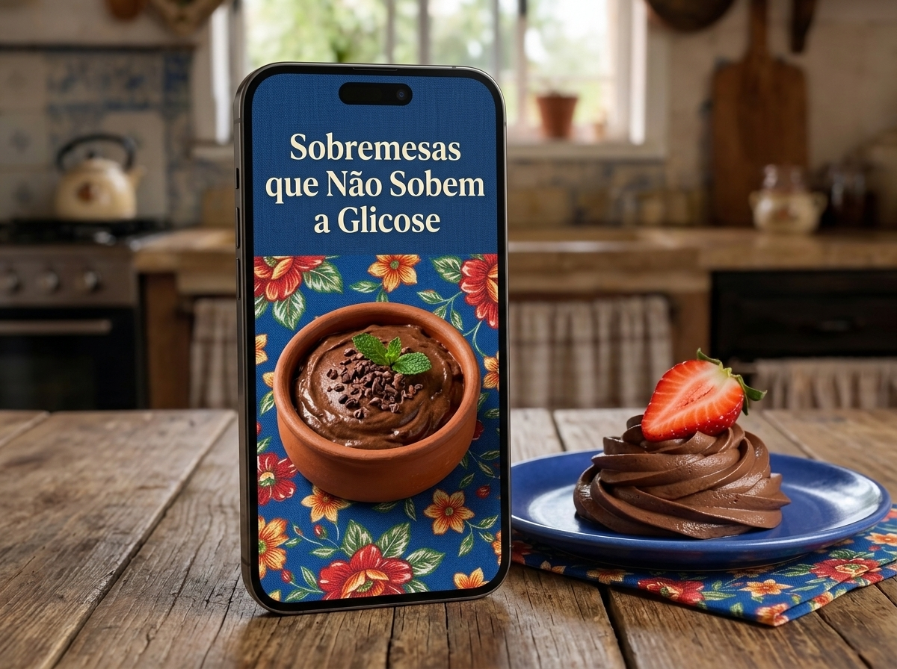

É a mesma refeição. A diferença é só a ordem do prato.
Minha filha, aquele sono que te derruba 30 minutos depois do almoço não é idade. É o seu sangue recebendo uma enxurrada de açúcar de uma vez só. Separei três dias simples para você sentir a diferença já amanhã:

O Elixir de Beterraba, fresquinho e pronto em 2 minutos.
Hoje, no almoço e na janta, não misture tudo de uma vez. Coma cada grupo separado, nesta ordem:
Pela manhã, ainda em jejum, prepare o Elixir de Beterraba com Maçã e Gengibre.
Hoje é o dia de comer aquele docinho de domingo, ou um carboidrato mais pesado, sem medo.
Esse sono incontrolável depois de comer não é normal. Logo após um prato de arroz e feijão, ou um pedaço de pão, o seu açúcar sobe lá no alto — é o Pico de Glicose.
Para te proteger, o corpo joga uma onda de insulina para baixar esse açúcar correndo. É aí que a glicose despenca rápido demais — o Vale de Glicose. E é nesse vale que mora o cansaço.

Essa queda livre é o que te dá:
Viver nessa montanha-russa destrói a sua saúde, engorda a barriga e vai desgastando o seu pâncreas até ele não aguentar mais.
A maioria das pessoas acha que, para controlar a glicose, precisa cortar o arroz, o pão, as massas e nunca mais comer um doce. Isso é sofrimento desnecessário.
A ciência já provou que o estômago digere os nutrientes em tempos diferentes. Quando você usa a Sincronia Digestiva, você organiza o prato:

Sem picos de glicose = sem moleza depois do almoço = sem acúmulo de gordura na barriga.
Eu não conseguia ficar acordada depois do almoço, parecia que meu corpo pesava uma tonelada. Comecei a comer a salada primeiro e tomei o elixir de beterraba de manhã. No terceiro dia, já não sentia mais aquele sono. Minha glicose, que dava 160 depois de comer, agora não passa de 110!
Sempre tive medo de comer um pedaço de bolo ou arroz com feijão. O método da Dona Sebastiana me ensinou a comer na ordem certa e usar o truque do vinagre antes. Medi na ponta do dedo duas horas depois e deu 105! Estou muito feliz em poder comer sem medo de novo.

O corpo tem uma capacidade incrível de se regular. A partir do momento em que ele para de receber "combustível" na ordem errada, a energia volta a ficar estável em poucos dias.

Dona Sebastiana e as amigas, num fim de tarde qualquer.
Claro que não, minha filha! O arroz e o feijão são sagrados na nossa mesa. Você só vai aprender a comer eles no momento certo da refeição, para não dar pico de glicose.
Responde sim, e muito bem! É justamente nesta fase da vida que a Sincronia Digestiva faz mais diferença, porque poupa o pâncreas que já trabalhou tanto a vida toda.
É a coisa mais simples do mundo. Você não vai cozinhar nada diferente — só vai colocar os alimentos na ordem correta na hora de comer. Só isso.
Pelo contrário! Alimentos "diet" industriais são cheios de química e caros. Aqui usamos comida simples de feira: salada, legumes, carnes normais e temperos caseiros.
Para você dominar a Sincronia Digestiva, acabar com a moleza e controlar os picos de açúcar de uma vez por todas, organizamos tudo neste método:

(Baseado na Sincronia Digestiva)
Um livro digital ricamente ilustrado, escrito com termos simples e letras grandes para facilitar a leitura de quem tem mais de 50 anos.
O risco é todo meu. Teste a ordem de comer e as receitas do guia por 7 dias inteiros. Se não sentir uma melhora nítida na sua disposição, me manda um e-mail — devolvo todo o seu dinheiro na mesma hora, sem burocracia.
Quer comer um docinho saboroso sem provocar picos de glicose e sem aquela culpa depois do almoço? Adicione este guia com 12 receitas de sobremesas seguras e fáceis de fazer. (Preço normal: R$ 29,90. Apenas R$ 9,90 nesta página.)
